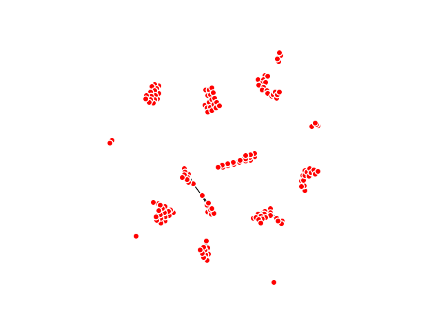

Note
Click here to download the full example code
Digits Dataset¶
This digits example shows two ways of customizing the tooltips options in the HTML visualization. It generates the visualization with tooltips set as the y-label, or number of the image. The second generated result uses the actual image in the tooltips.
Visualization with y-label tooltip
Visualization with custom tooltips
Out:
KeplerMapper(verbose=2)
..Composing projection pipeline of length 1:
Projections: TSNE(angle=0.5, early_exaggeration=12.0, init='random', learning_rate=200.0,
method='barnes_hut', metric='euclidean', min_grad_norm=1e-07,
n_components=2, n_iter=1000, n_iter_without_progress=300,
perplexity=30.0, random_state=None, verbose=0)
Distance matrices: False
Scalers: MinMaxScaler(copy=True, feature_range=(0, 1))
..Projecting on data shaped (1797, 64)
..Projecting data using:
TSNE(angle=0.5, early_exaggeration=12.0, init='random', learning_rate=200.0,
method='barnes_hut', metric='euclidean', min_grad_norm=1e-07,
n_components=2, n_iter=1000, n_iter_without_progress=300,
perplexity=30.0, random_state=None, verbose=2)
[t-SNE] Computing 91 nearest neighbors...
[t-SNE] Indexed 1797 samples in 0.002s...
[t-SNE] Computed neighbors for 1797 samples in 0.287s...
[t-SNE] Computed conditional probabilities for sample 1000 / 1797
[t-SNE] Computed conditional probabilities for sample 1797 / 1797
[t-SNE] Mean sigma: 8.121136
[t-SNE] Computed conditional probabilities in 0.088s
[t-SNE] Iteration 50: error = 76.1715927, gradient norm = 0.1268955 (50 iterations in 1.087s)
[t-SNE] Iteration 100: error = 64.6689377, gradient norm = 0.0592061 (50 iterations in 0.631s)
[t-SNE] Iteration 150: error = 62.7446213, gradient norm = 0.0453551 (50 iterations in 0.570s)
[t-SNE] Iteration 200: error = 62.1512909, gradient norm = 0.0265913 (50 iterations in 0.587s)
[t-SNE] Iteration 250: error = 61.9114990, gradient norm = 0.0265408 (50 iterations in 0.596s)
[t-SNE] KL divergence after 250 iterations with early exaggeration: 61.911499
[t-SNE] Iteration 300: error = 1.0544291, gradient norm = 0.0008993 (50 iterations in 0.557s)
[t-SNE] Iteration 350: error = 0.8799470, gradient norm = 0.0004161 (50 iterations in 0.541s)
[t-SNE] Iteration 400: error = 0.8235455, gradient norm = 0.0002774 (50 iterations in 0.540s)
[t-SNE] Iteration 450: error = 0.7982246, gradient norm = 0.0001886 (50 iterations in 0.552s)
[t-SNE] Iteration 500: error = 0.7842638, gradient norm = 0.0001611 (50 iterations in 0.551s)
[t-SNE] Iteration 550: error = 0.7759321, gradient norm = 0.0001423 (50 iterations in 0.555s)
[t-SNE] Iteration 600: error = 0.7705513, gradient norm = 0.0001324 (50 iterations in 0.562s)
[t-SNE] Iteration 650: error = 0.7663159, gradient norm = 0.0001151 (50 iterations in 0.550s)
[t-SNE] Iteration 700: error = 0.7626361, gradient norm = 0.0001074 (50 iterations in 0.560s)
[t-SNE] Iteration 750: error = 0.7590845, gradient norm = 0.0001043 (50 iterations in 0.571s)
[t-SNE] Iteration 800: error = 0.7552696, gradient norm = 0.0001039 (50 iterations in 0.561s)
[t-SNE] Iteration 850: error = 0.7530823, gradient norm = 0.0000915 (50 iterations in 0.538s)
[t-SNE] Iteration 900: error = 0.7511483, gradient norm = 0.0000787 (50 iterations in 0.535s)
[t-SNE] Iteration 950: error = 0.7491270, gradient norm = 0.0000830 (50 iterations in 0.570s)
[t-SNE] Iteration 1000: error = 0.7475879, gradient norm = 0.0000725 (50 iterations in 0.597s)
[t-SNE] KL divergence after 1000 iterations: 0.747588
..Scaling with: MinMaxScaler(copy=True, feature_range=(0, 1))
Mapping on data shaped (1797, 2) using lens shaped (1797, 2)
Minimal points in hypercube before clustering: 15
Creating 1225 hypercubes.
Cube_0 is empty.
> Found 1 clusters in hypercube 1.
> Found 1 clusters in hypercube 2.
Cube_3 is empty.
Cube_4 is empty.
Cube_5 is empty.
Cube_6 is empty.
Cube_7 is empty.
Cube_8 is empty.
Cube_9 is empty.
Cube_10 is empty.
> Found 1 clusters in hypercube 11.
> Found 1 clusters in hypercube 12.
Cube_13 is empty.
Cube_14 is empty.
Cube_15 is empty.
> Found 1 clusters in hypercube 16.
Cube_17 is empty.
Cube_18 is empty.
> Found 1 clusters in hypercube 19.
Cube_20 is empty.
Cube_21 is empty.
> Found 1 clusters in hypercube 22.
> Found 1 clusters in hypercube 23.
> Found 1 clusters in hypercube 24.
> Found 1 clusters in hypercube 25.
Cube_26 is empty.
Cube_27 is empty.
> Found 1 clusters in hypercube 28.
> Found 1 clusters in hypercube 29.
> Found 1 clusters in hypercube 30.
> Found 1 clusters in hypercube 31.
> Found 1 clusters in hypercube 32.
Cube_33 is empty.
Cube_34 is empty.
Cube_35 is empty.
> Found 1 clusters in hypercube 36.
> Found 1 clusters in hypercube 37.
> Found 1 clusters in hypercube 38.
> Found 1 clusters in hypercube 39.
Cube_40 is empty.
Cube_41 is empty.
> Found 1 clusters in hypercube 42.
> Found 1 clusters in hypercube 43.
> Found 1 clusters in hypercube 44.
> Found 1 clusters in hypercube 45.
> Found 1 clusters in hypercube 46.
Cube_47 is empty.
Cube_48 is empty.
> Found 1 clusters in hypercube 49.
> Found 1 clusters in hypercube 50.
Cube_51 is empty.
Cube_52 is empty.
Cube_53 is empty.
Cube_54 is empty.
> Found 1 clusters in hypercube 55.
> Found 1 clusters in hypercube 56.
> Found 1 clusters in hypercube 57.
> Found 1 clusters in hypercube 58.
Cube_59 is empty.
Cube_60 is empty.
Cube_61 is empty.
Cube_62 is empty.
Cube_63 is empty.
Cube_64 is empty.
Cube_65 is empty.
Cube_66 is empty.
Cube_67 is empty.
Cube_68 is empty.
Cube_69 is empty.
Cube_70 is empty.
Cube_71 is empty.
> Found 1 clusters in hypercube 72.
Cube_73 is empty.
Cube_74 is empty.
Cube_75 is empty.
Cube_76 is empty.
Cube_77 is empty.
Cube_78 is empty.
Cube_79 is empty.
> Found 1 clusters in hypercube 80.
Cube_81 is empty.
Cube_82 is empty.
Cube_83 is empty.
Cube_84 is empty.
Cube_85 is empty.
Cube_86 is empty.
Cube_87 is empty.
Cube_88 is empty.
Cube_89 is empty.
Cube_90 is empty.
Cube_91 is empty.
Cube_92 is empty.
Cube_93 is empty.
Cube_94 is empty.
Cube_95 is empty.
> Found 1 clusters in hypercube 96.
Cube_97 is empty.
Cube_98 is empty.
Cube_99 is empty.
Cube_100 is empty.
Cube_101 is empty.
Cube_102 is empty.
> Found 1 clusters in hypercube 103.
> Found 1 clusters in hypercube 104.
Cube_105 is empty.
Cube_106 is empty.
Cube_107 is empty.
> Found 1 clusters in hypercube 108.
> Found 1 clusters in hypercube 109.
Cube_110 is empty.
Cube_111 is empty.
Cube_112 is empty.
Cube_113 is empty.
Cube_114 is empty.
Cube_115 is empty.
Cube_116 is empty.
Cube_117 is empty.
Cube_118 is empty.
Cube_119 is empty.
Cube_120 is empty.
Cube_121 is empty.
Cube_122 is empty.
> Found 1 clusters in hypercube 123.
Cube_124 is empty.
Cube_125 is empty.
> Found 1 clusters in hypercube 126.
> Found 1 clusters in hypercube 127.
Cube_128 is empty.
Cube_129 is empty.
> Found 1 clusters in hypercube 130.
> Found 1 clusters in hypercube 131.
> Found 1 clusters in hypercube 132.
Cube_133 is empty.
Cube_134 is empty.
> Found 1 clusters in hypercube 135.
> Found 1 clusters in hypercube 136.
> Found 1 clusters in hypercube 137.
> Found 1 clusters in hypercube 138.
Cube_139 is empty.
Cube_140 is empty.
Cube_141 is empty.
Cube_142 is empty.
> Found 1 clusters in hypercube 143.
> Found 1 clusters in hypercube 144.
> Found 1 clusters in hypercube 145.
Cube_146 is empty.
Cube_147 is empty.
> Found 1 clusters in hypercube 148.
> Found 1 clusters in hypercube 149.
> Found 1 clusters in hypercube 150.
> Found 1 clusters in hypercube 151.
Cube_152 is empty.
Cube_153 is empty.
> Found 1 clusters in hypercube 154.
> Found 1 clusters in hypercube 155.
> Found 1 clusters in hypercube 156.
Cube_157 is empty.
Cube_158 is empty.
Cube_159 is empty.
Cube_160 is empty.
> Found 1 clusters in hypercube 161.
> Found 1 clusters in hypercube 162.
> Found 1 clusters in hypercube 163.
Cube_164 is empty.
Cube_165 is empty.
Cube_166 is empty.
Cube_167 is empty.
> Found 1 clusters in hypercube 168.
> Found 1 clusters in hypercube 169.
> Found 1 clusters in hypercube 170.
> Found 1 clusters in hypercube 171.
Cube_172 is empty.
Cube_173 is empty.
> Found 1 clusters in hypercube 174.
> Found 1 clusters in hypercube 175.
> Found 1 clusters in hypercube 176.
Cube_177 is empty.
Cube_178 is empty.
> Found 1 clusters in hypercube 179.
Cube_180 is empty.
Cube_181 is empty.
Cube_182 is empty.
Cube_183 is empty.
Cube_184 is empty.
Cube_185 is empty.
Cube_186 is empty.
Cube_187 is empty.
Cube_188 is empty.
> Found 1 clusters in hypercube 189.
Cube_190 is empty.
Cube_191 is empty.
Cube_192 is empty.
> Found 1 clusters in hypercube 193.
> Found 1 clusters in hypercube 194.
> Found 1 clusters in hypercube 195.
Cube_196 is empty.
Cube_197 is empty.
Cube_198 is empty.
Cube_199 is empty.
Cube_200 is empty.
Cube_201 is empty.
> Found 1 clusters in hypercube 202.
Cube_203 is empty.
Cube_204 is empty.
Cube_205 is empty.
Cube_206 is empty.
> Found 1 clusters in hypercube 207.
Cube_208 is empty.
Cube_209 is empty.
Cube_210 is empty.
Cube_211 is empty.
> Found 1 clusters in hypercube 212.
> Found 1 clusters in hypercube 213.
> Found 1 clusters in hypercube 214.
Cube_215 is empty.
Cube_216 is empty.
Cube_217 is empty.
> Found 1 clusters in hypercube 218.
> Found 1 clusters in hypercube 219.
> Found 1 clusters in hypercube 220.
Cube_221 is empty.
Cube_222 is empty.
Cube_223 is empty.
> Found 1 clusters in hypercube 224.
Cube_225 is empty.
Cube_226 is empty.
> Found 1 clusters in hypercube 227.
Cube_228 is empty.
Cube_229 is empty.
Cube_230 is empty.
Cube_231 is empty.
Cube_232 is empty.
Cube_233 is empty.
> Found 1 clusters in hypercube 234.
> Found 1 clusters in hypercube 235.
Cube_236 is empty.
Cube_237 is empty.
Cube_238 is empty.
Cube_239 is empty.
Cube_240 is empty.
Cube_241 is empty.
> Found 1 clusters in hypercube 242.
Cube_243 is empty.
Cube_244 is empty.
> Found 1 clusters in hypercube 245.
Cube_246 is empty.
Cube_247 is empty.
Cube_248 is empty.
Cube_249 is empty.
Cube_250 is empty.
> Found 1 clusters in hypercube 251.
> Found 1 clusters in hypercube 252.
> Found 1 clusters in hypercube 253.
Cube_254 is empty.
Cube_255 is empty.
Cube_256 is empty.
Cube_257 is empty.
Cube_258 is empty.
Cube_259 is empty.
Cube_260 is empty.
Cube_261 is empty.
Cube_262 is empty.
Cube_263 is empty.
Cube_264 is empty.
Cube_265 is empty.
> Found 1 clusters in hypercube 266.
> Found 1 clusters in hypercube 267.
Cube_268 is empty.
Cube_269 is empty.
> Found 1 clusters in hypercube 270.
Cube_271 is empty.
Cube_272 is empty.
Cube_273 is empty.
Cube_274 is empty.
> Found 1 clusters in hypercube 275.
> Found 1 clusters in hypercube 276.
Cube_277 is empty.
Cube_278 is empty.
Cube_279 is empty.
Cube_280 is empty.
> Found 1 clusters in hypercube 281.
> Found 1 clusters in hypercube 282.
Cube_283 is empty.
Cube_284 is empty.
> Found 1 clusters in hypercube 285.
> Found 1 clusters in hypercube 286.
Cube_287 is empty.
Cube_288 is empty.
Cube_289 is empty.
Cube_290 is empty.
Cube_291 is empty.
> Found 1 clusters in hypercube 292.
Cube_293 is empty.
Cube_294 is empty.
Cube_295 is empty.
Cube_296 is empty.
Cube_297 is empty.
Cube_298 is empty.
Cube_299 is empty.
Cube_300 is empty.
Cube_301 is empty.
Cube_302 is empty.
Cube_303 is empty.
Cube_304 is empty.
Cube_305 is empty.
Cube_306 is empty.
Cube_307 is empty.
Cube_308 is empty.
Cube_309 is empty.
Cube_310 is empty.
Cube_311 is empty.
Cube_312 is empty.
Cube_313 is empty.
Cube_314 is empty.
> Found 1 clusters in hypercube 315.
Cube_316 is empty.
Cube_317 is empty.
> Found 1 clusters in hypercube 318.
> Found 1 clusters in hypercube 319.
Cube_320 is empty.
Cube_321 is empty.
Cube_322 is empty.
Cube_323 is empty.
Cube_324 is empty.
Cube_325 is empty.
Cube_326 is empty.
Cube_327 is empty.
Cube_328 is empty.
Cube_329 is empty.
Cube_330 is empty.
> Found 1 clusters in hypercube 331.
> Found 1 clusters in hypercube 332.
Cube_333 is empty.
Cube_334 is empty.
> Found 1 clusters in hypercube 335.
> Found 1 clusters in hypercube 336.
Cube_337 is empty.
Cube_338 is empty.
Cube_339 is empty.
> Found 1 clusters in hypercube 340.
> Found 1 clusters in hypercube 341.
> Found 1 clusters in hypercube 342.
Cube_343 is empty.
Cube_344 is empty.
Cube_345 is empty.
Cube_346 is empty.
Cube_347 is empty.
> Found 1 clusters in hypercube 348.
> Found 1 clusters in hypercube 349.
Cube_350 is empty.
Cube_351 is empty.
> Found 1 clusters in hypercube 352.
> Found 1 clusters in hypercube 353.
> Found 1 clusters in hypercube 354.
Cube_355 is empty.
Cube_356 is empty.
> Found 1 clusters in hypercube 357.
> Found 1 clusters in hypercube 358.
> Found 1 clusters in hypercube 359.
Cube_360 is empty.
Cube_361 is empty.
Cube_362 is empty.
Cube_363 is empty.
> Found 1 clusters in hypercube 364.
> Found 1 clusters in hypercube 365.
> Found 1 clusters in hypercube 366.
> Found 1 clusters in hypercube 367.
Cube_368 is empty.
Cube_369 is empty.
> Found 1 clusters in hypercube 370.
> Found 1 clusters in hypercube 371.
> Found 1 clusters in hypercube 372.
Cube_373 is empty.
Cube_374 is empty.
> Found 1 clusters in hypercube 375.
> Found 1 clusters in hypercube 376.
Cube_377 is empty.
Cube_378 is empty.
Cube_379 is empty.
Cube_380 is empty.
Cube_381 is empty.
Cube_382 is empty.
> Found 1 clusters in hypercube 383.
> Found 1 clusters in hypercube 384.
> Found 1 clusters in hypercube 385.
> Found 1 clusters in hypercube 386.
Cube_387 is empty.
Cube_388 is empty.
> Found 1 clusters in hypercube 389.
> Found 1 clusters in hypercube 390.
Cube_391 is empty.
Cube_392 is empty.
> Found 1 clusters in hypercube 393.
Cube_394 is empty.
Cube_395 is empty.
Cube_396 is empty.
Cube_397 is empty.
Cube_398 is empty.
Cube_399 is empty.
Cube_400 is empty.
Cube_401 is empty.
> Found 1 clusters in hypercube 402.
> Found 1 clusters in hypercube 403.
Cube_404 is empty.
Cube_405 is empty.
> Found 1 clusters in hypercube 406.
> Found 1 clusters in hypercube 407.
> Found 1 clusters in hypercube 408.
Cube_409 is empty.
Cube_410 is empty.
Cube_411 is empty.
Cube_412 is empty.
Cube_413 is empty.
> Found 1 clusters in hypercube 414.
> Found 1 clusters in hypercube 415.
> Found 1 clusters in hypercube 416.
Cube_417 is empty.
Cube_418 is empty.
Cube_419 is empty.
Cube_420 is empty.
Cube_421 is empty.
Cube_422 is empty.
Cube_423 is empty.
> Found 1 clusters in hypercube 424.
> Found 1 clusters in hypercube 425.
> Found 1 clusters in hypercube 426.
Cube_427 is empty.
Cube_428 is empty.
Cube_429 is empty.
> Found 1 clusters in hypercube 430.
> Found 1 clusters in hypercube 431.
> Found 1 clusters in hypercube 432.
Cube_433 is empty.
Cube_434 is empty.
Cube_435 is empty.
Cube_436 is empty.
Cube_437 is empty.
Cube_438 is empty.
> Found 1 clusters in hypercube 439.
> Found 1 clusters in hypercube 440.
> Found 1 clusters in hypercube 441.
> Found 1 clusters in hypercube 442.
Cube_443 is empty.
Cube_444 is empty.
Cube_445 is empty.
Cube_446 is empty.
Cube_447 is empty.
> Found 1 clusters in hypercube 448.
> Found 1 clusters in hypercube 449.
Cube_450 is empty.
Created 337 edges and 153 nodes in 0:00:00.212356.
Output graph examples to html
Wrote visualization to: output/digits_custom_tooltips.html
Wrote visualization to: output/digits_ylabel_tooltips.html
import io
import sys
import base64
import matplotlib.pyplot as plt
import numpy as np
import sklearn
from sklearn import datasets
import kmapper as km
try:
from scipy.misc import imsave, toimage
except ImportError as e:
print("imsave requires you to install pillow. Run `pip install pillow` and then try again.")
sys.exit()
# Load digits dat
data, labels = datasets.load_digits().data, datasets.load_digits().target
# Create images for a custom tooltip array
tooltip_s = []
for image_data in data:
output = io.BytesIO()
img = toimage(image_data.reshape((8, 8))) # Data was a flat row of 64 "pixels".
img.save(output, format="PNG")
contents = output.getvalue()
img_encoded = base64.b64encode(contents)
img_tag = """<img src="data:image/png;base64,{}">""".format(img_encoded.decode('utf-8'))
tooltip_s.append(img_tag)
output.close()
tooltip_s = np.array(tooltip_s) # need to make sure to feed it as a NumPy array, not a list
# Initialize to use t-SNE with 2 components (reduces data to 2 dimensions). Also note high overlap_percentage.
mapper = km.KeplerMapper(verbose=2)
# Fit and transform data
projected_data = mapper.fit_transform(data,
projection=sklearn.manifold.TSNE())
# Create the graph (we cluster on the projected data and suffer projection loss)
graph = mapper.map(projected_data,
clusterer=sklearn.cluster.DBSCAN(eps=0.3, min_samples=15),
cover=km.Cover(35, 0.4))
# Create the visualizations (increased the graph_gravity for a tighter graph-look.)
print("Output graph examples to html" )
# Tooltips with image data for every cluster member
mapper.visualize(graph,
title="Handwritten digits Mapper",
path_html="output/digits_custom_tooltips.html",
color_function=labels,
custom_tooltips=tooltip_s)
# Tooltips with the target y-labels for every cluster member
mapper.visualize(graph,
title="Handwritten digits Mapper",
path_html="output/digits_ylabel_tooltips.html",
custom_tooltips=labels)
# Matplotlib examples
km.draw_matplotlib(graph, layout="spring")
plt.show()
Total running time of the script: ( 0 minutes 13.909 seconds)